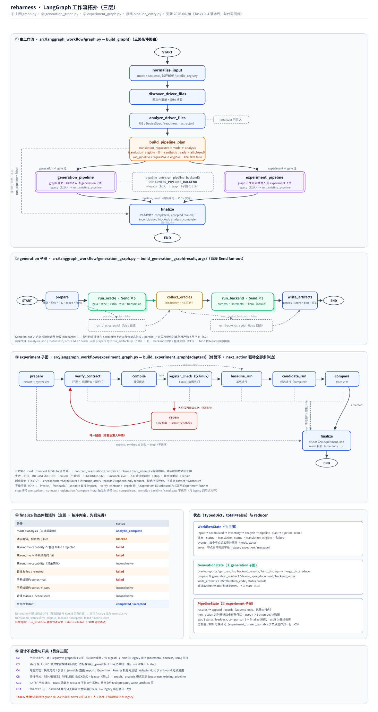

reharness · LangGraph 工作流拓扑（三层）
源：src/langgraph_workflow/graph.py（主图）·
generation_graph.py（②）· experiment_graph.py（③）·
pipeline_entry.py（开关接线）· 入口 python3 -m langgraph_workflow ·
更新 2026-08-30（Tasks 0–4 落地后，节点与边经实际编译验证）

确定性节点
资格门 / 条件分支（fail-closed）
Send 并行 fan-out 分支
join barrier（并行汇合点）
子图复合节点（经 pipeline_entry 分发）
repair / 回边
可注入服务 / 开关 / 串行回退
① 主工作流（graph.py · build_graph，7 节点）
| 节点 | 职责 | 读/写 State |
|---|
normalize_input |
请求规范化：mode/backend、仓库路径解析、profile 注册表校验 |
input → normalized |
discover_driver_files |
源文件清单与 SHA 摘要（单文件或 manifest 多源） |
normalized → inventory |
analyze_driver_files |
调 extractor 产出 RIS / DeviceSpec / readiness 证据（analyzer 可注入） |
normalized+inventory → analysis |
build_pipeline_plan |
唯一条件分支：translation_requested = mode≠analysis；
translation_eligible = readiness.llm_synthesis_ready is True（fail-closed）；
run_pipeline = 两者与；缺 runtime capability 不拦截生成，留待 finalize 分类 |
analysis → pipeline_plan |
generation_pipeline |
generation 模式管线；经 pipeline_entry 按
REHARNESS_PIPELINE_BACKEND 分发（graph → ② 子图；legacy → 既有管线） |
normalized+analysis → pipeline_result |
experiment_pipeline |
experiment 模式管线；分发同上（graph → ③ 子图）；需 experiment_manifest 与缓存 evidence 对齐 |
normalized+analysis → pipeline_result |
finalize |
终态仲裁（矩阵见 ④），写 status / translation_status / failure |
plan+result → status* |
| 边 | 类型 / 条件 |
|---|
| START → normalize → discover → analyze → plan | 固定顺序边 |
| plan → generation_pipeline / experiment_pipeline |
条件边 route_pipeline：run_pipeline=true 时按 mode 三路选择 |
| plan → finalize | 条件边：纯分析（mode=analysis）或资格门不过 |
| generation_pipeline / experiment_pipeline → finalize → END |
固定边；两后端返回同一 JSON 契约，finalize 无感知 |
② generation 子图（generation_graph.py · 7 节点 + 2 串行回退）
| 节点 | 职责 |
|---|
prepare |
建目录；build_generation_contract + synthesis_readiness 评分；落盘 RIS / formal.json /
generation-contract.json / dspec / device-spec.json / facts / analysis.json |
run_oracle（Send ×5） |
五个源级 oracle 并行：gpio / sdhci / virtio / w1c / transaction，
各自写 verify/<oracle>.json |
run_oracles_serial |
parallel_oracles=false 时的串行回退，产物字节不变 |
collect_oracles |
join barrier：Send fan-out 后必须接普通节点汇合（条件边直接挂 Send
目标会以部分状态触发） |
run_backend（Send ×3） |
三后端并行：harness（cc 编译+运行+trace）、baremetal（freestanding
编译+host oracle）、linux（真实 Kbuild 模块编译 + AST / 注册 / lowering-plan 验证） |
run_backends_serial |
parallel_backends=false 串行回退 |
write_artifacts |
汇总 analysis.json / metrics.txt / score.txt / *.bind（按 legacy 顺序）；
return_code 由 _pipeline_success(score) 决定 |
边：START → prepare →（条件：Send×5 ｜ 串行）→ collect_oracles →（条件：Send×3 ｜ 串行）→
write_artifacts → END。任一 backend 分支异常 = 整体失败（C11）；
重提取对象 res 留在构建期闭包（C3）。
③ experiment 子图（experiment_graph.py · 修复环，9 节点）
| 节点 | 职责 |
|---|
prepare |
目录 + 初始 experiment.json 持久化；extract（缓存 evidence）→ synthesize 产出候选与 scenario |
verify_contract |
环顶：used 总限检查 + 一般契约门；过则清零 contract_attempts |
compile |
编译候选；INFRASTRUCTURE / 不可重试 → stop，超 compile 限 → stop，否则 → repair |
register_check |
仅 linux backend：编译成功后的 Linux 注册契约门（compile → register_check → baseline_run，
环序以 legacy 为准，黄金测试钉死） |
baseline_run |
基线运行；INCONCLUSIVE → inconclusive 终态 |
candidate_run |
编译产物候选运行 |
compare |
trace 对比；相等 → accepted 终态；INFRASTRUCTURE 或超 trace 限 → stop；否则 → repair |
repair |
LLM 修复（active_feedback 驱动）；成功更新 candidate/scenario 后
唯一回边重入 verify_contract |
finalize |
终态持久化 experiment.json + result 投影（accepted / records / failure / comparison） |
| 条件边（next_action） | 目标 |
|---|
prepare | verify_contract ｜ finalize（extract/synthesize 失败 → stop） |
verify_contract | compile ｜ repair（可重试，携带 comparison）｜ finalize（不可重试 / 总限超 / contract 限超） |
compile | register_check（linux）｜ baseline_run（非 linux）｜ repair ｜ finalize（infra / 不可重试 / 超限） |
register_check | baseline_run ｜ repair（携带 comparison）｜ finalize（不可重试 / registration 限超） |
baseline_run / candidate_run | 下一阶段 ｜ repair ｜ finalize（inconclusive → inconclusive；infra → failed；超 runtime 限 → failed） |
compare | finalize（accepted 或 infra / 超 trace 限）｜ repair（mismatch 可重试，携带 comparison） |
repair | verify_contract（成功）｜ finalize（repair 失败 → stop） |
断点续跑（Task 2）：build_experiment_graph(checkpointer=SqliteSaver,
interrupt_after=[...])；records 为 append-only reducer，续跑序号连续、不重复 extract/synthesize。
④ finalize 终态仲裁矩阵（主图 · 按序判定）
| 条件 | status |
|---|
| mode = analysis（未请求翻译） | analysis_complete |
| 请求翻译，但资格门未过 | blocked |
| 缺 runtime capability ∧ 管线 failed / rejected | failed |
| 缺 runtime ∧ 子系统契约 fail | failed |
| 缺 runtime capability（其余情况） | inconclusive |
| 管线 failed / rejected | failed |
| 子系统契约 status = fail | failed |
| 子系统契约 status ≠ pass | inconclusive |
| 管线 status = inconclusive | inconclusive |
| 全部检查通过 | completed / accepted |
缺 runtime 时管线仍会执行（静态翻译与 Kbuild 仍有价值），仅在 finalize 归为 inconclusive；
异常兜底：run_workflow 捕获节点异常 → status=failed，JSON 协议不破。
⑤ 接线开关与设计不变量
| 条目 | 说明 |
|---|
C8 开关 |
REHARNESS_PIPELINE_BACKEND = legacy（默认）｜ graph；
graph 时 generation/experiment 模式经 pipeline_entry 进对应子图；
analysis 模式恒走 legacy run_existing_pipeline；两后端返回同一 JSON 契约 |
C2 对拍 |
legacy vs graph 影子对拍（同路径重放，产物树逐字节一致含 digest）；并行 vs 串行一致 |
C3 全 JSON state |
重对象（res 等）留构建期闭包；适配器值经 _jsonable 于节点边界归一化 |
C4 零重实现 |
_invoke/_feedback/_jsonable 直接 import；
_verify_contract/_repair/_comparison_equal 经 _AdapterHost unbound 复用 |
C10 IO 边界 |
route 函数与 reducer 不碰文件系统；共享文件仅由 prepare / write_artifacts 写 |
C11 fail-fast |
任一 backend 并行分支异常 = 整体运行失败（与 legacy 串行循环一致） |
| Task 5 待办 |
默认翻转为 graph 需 ≥3 个真实 driver 对拍证据 + 人工批准（当前默认仍为 legacy） |
与旧版拓扑图的差异（2026-08-30 01:17 版 → 本版）
旧版仅覆盖单一 run_project_pipeline 节点的主图。Tasks 0–4 落地后：
① 主图改为三路条件路由（generation_pipeline / experiment_pipeline / finalize 直达）；
② 新增 generation 子图（两段 Send fan-out + join barrier + 串行回退）；
③ 新增 experiment 修复环子图（9 节点、唯一回边、断点续跑）；
④ pipeline_entry 特性开关接线；⑤ 补充设计不变量表。
本版节点与边均经 graph.get_graph() 实际编译验证。